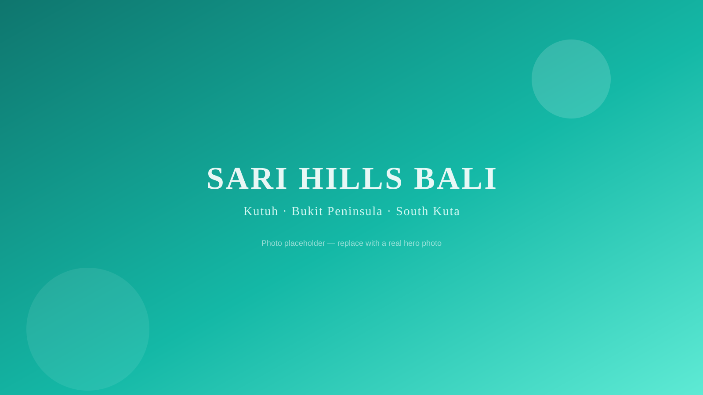
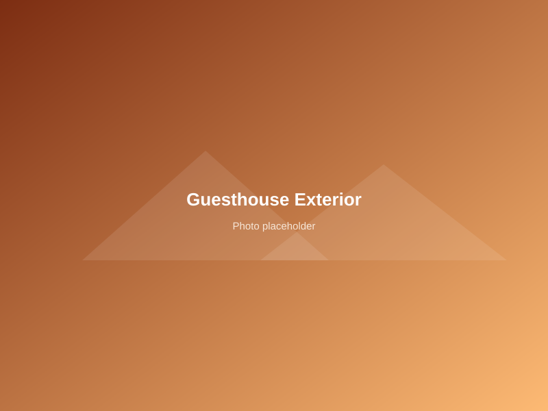
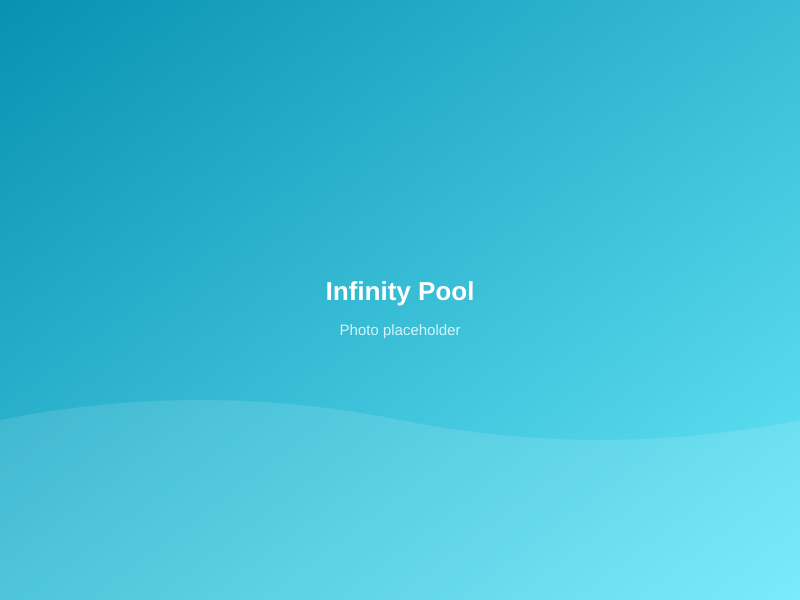
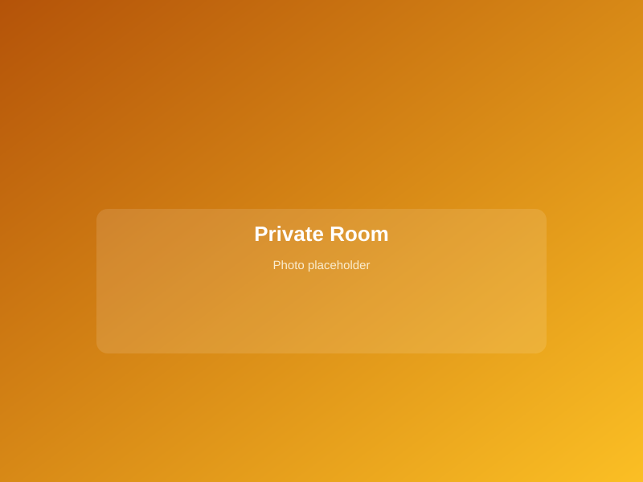
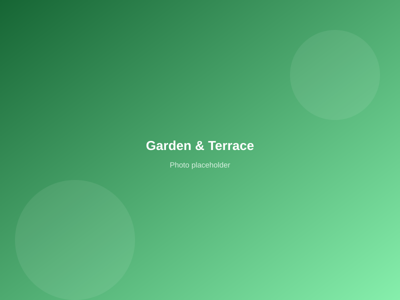
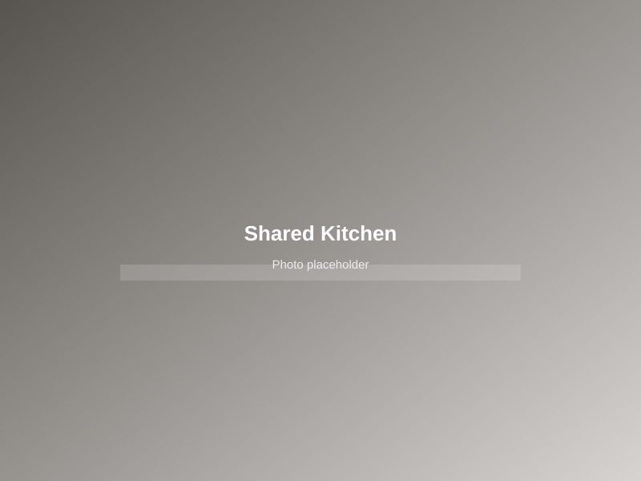
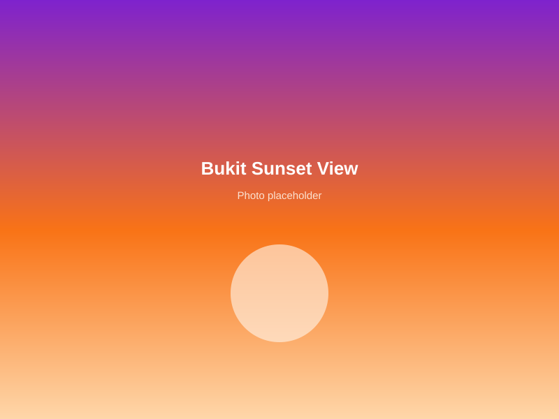

A quiet boutique guesthouse tucked into the hills of Kutuh, on Bali's Bukit Peninsula — built around an infinity pool and lush tropical garden.
Tucked into the hills of Kutuh in South Kuta, Sari Hills Bali is a recently renovated guesthouse built around a sparkling infinity pool and a lush tropical garden. Five private rooms, each with an ensuite bathroom, open onto quiet, green surroundings — a calm base away from the crowds.
You're just minutes from Pandawa Beach and the clifftop temples of Uluwatu, with Ngurah Rai International Airport around a 20-minute drive away. Guests enjoy a fully equipped shared kitchen, free WiFi throughout, and warm Balinese hospitality.

Placeholder photos for now — swap the files in /images with real photos of the property whenever you're ready.





Everything you need for a relaxed stay on the Bukit Peninsula.
A big pool with garden views, open to all guests.
Fast, reliable WiFi throughout the property.
Private on-site parking at no extra cost.
Climate control in every room.
Fully equipped kitchen for guest use.
Outdoor seating in a lush tropical garden.
Personal safe and tea/coffee facilities.
Secure space to store bikes on-site.
Drop your bags before check-in or after check-out.
Each room is private with its own ensuite bathroom.
Sari Hills Bali sits in the Kutuh district of South Kuta (Kuta Selatan), Badung Regency — close to the Bukit's best beaches and clifftop views.
Check live availability, pricing, and message the host directly through Airbnb.